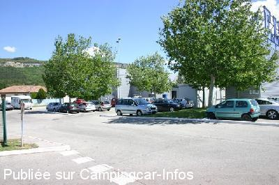
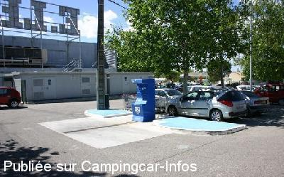
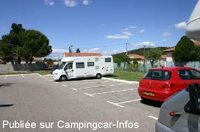

AS = Aire de services uniquement de :
BOLLÈNE
(N° 510)
Accès/adresse :
Route de Saint Paul-Trois-Châteaux
84500 BOLLÈNE
84500 BOLLÈNE
Latitude : (Nord) 44.32178° Décimaux ou 44° 19′ 18′′
Longitude : (Est) 4.74442° Décimaux ou 4° 44′ 39′′
Tarif : Gratuit
Type de borne : FLOT BLEU
Services :


Autres informations :
Parking du Centre Leclerc : ouvert toute l'année
Utilisation de la borne aux heures
d'ouverture du magasin seulement
http://www.bollenetourisme.com/

Le 21/05/2012 par Jean-Bernard Boschung (iron)

Le 21/05/2012 par Jean-Bernard Boschung (iron)

Le 21/05/2012 par Jean-Bernard Boschung (iron)
de
BONNOT
le 04/02/2014 :
de passage le 3/01/2013 , aire de service facile d'utilisation, avons passé une nuit au calme, merci au centre LECLERC
de passage le 3/01/2013 , aire de service facile d'utilisation, avons passé une nuit au calme, merci au centre LECLERC
de
laurent
le 26/08/2013 :
Rien à ajouter; les commentaires précédents restent valables en 2013
Rien à ajouter; les commentaires précédents restent valables en 2013
de
Jean-Bernard Boschung (iron)
le 21/05/2012 :
De passage lors de notre ballade dans la Drome provencale, je confirme le premier commentaire. L'aire est derrière le mur ou figure l'indication E. Leclerc.
(je viens de proposer la modification des coordonnées)
Nous avons pu vidanger les eaux grises sans problème. L'accès à l'eau et le vidage de la K7 est bien gratuit, mais pas eu besoin.
L'accès est facile, et ne pose pas de problème.
De passage lors de notre ballade dans la Drome provencale, je confirme le premier commentaire. L'aire est derrière le mur ou figure l'indication E. Leclerc.
(je viens de proposer la modification des coordonnées)
Nous avons pu vidanger les eaux grises sans problème. L'accès à l'eau et le vidage de la K7 est bien gratuit, mais pas eu besoin.
L'accès est facile, et ne pose pas de problème.
de
jlou
le 10/05/2012 :
de passage le 30/04 nous étions 2cc
par contre pas d'eau ni de vidange wc car borne en panne sinon RAS calme et propre
de passage le 30/04 nous étions 2cc
par contre pas d'eau ni de vidange wc car borne en panne sinon RAS calme et propre
de
nenettemamita
le 25/08/2009 :
Pour les services, il faut y aller aux heures d'ouverture du magasin, pour le stationnement pas de problèmes d'horaires.
Pour les services, il faut y aller aux heures d'ouverture du magasin, pour le stationnement pas de problèmes d'horaires.
de
Frederick
le 01/06/2009 :
L'aire de services a été déplacée et se trouve maintenant derrière le grand mur où on peut lire en grand "LECLERC" avec des grosses lettres orange. C'est une borne type Flot Bleu mais GRATUITE. Il n'y a plus aucun problème pour vidanger comme auparavant où c'était plutôt du genre mal foutu (obligation d'y aller en 3/4 arrière pour vidanger. Le système est équipé d'enrouleurs. Nickel. Comme c'est sur un parking, il faut espérer que la place restera libre aux CC et qu'un client du magasin n'y garera pas sa voiture.
L'aire de services a été déplacée et se trouve maintenant derrière le grand mur où on peut lire en grand "LECLERC" avec des grosses lettres orange. C'est une borne type Flot Bleu mais GRATUITE. Il n'y a plus aucun problème pour vidanger comme auparavant où c'était plutôt du genre mal foutu (obligation d'y aller en 3/4 arrière pour vidanger. Le système est équipé d'enrouleurs. Nickel. Comme c'est sur un parking, il faut espérer que la place restera libre aux CC et qu'un client du magasin n'y garera pas sa voiture.